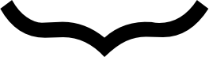

Logicism and Neologicism
Logicism is a philosophical, foundational, and foundationalist doctrine that can be advanced with respect to any branch of mathematics. Traditionally, logicism has concerned itself especially with arithmetic and real analysis. It comes in a stronger and a weaker version.
The strong version of logicism maintains that all mathematical truths in the chosen branch(es) form a species of logical truth. The weak version of logicism, by contrast, maintains only that all the theorems do. (By ‘theorems’ we mean results that are provable within the branch of mathematics in question.) The foundationalism is with respect to those parts of mathematics that the logicist reconstructs. Success in this regard is compatible, however, with a non-foundationalist (e.g., coherentist) view of the parts of mathematics that cannot be so reconstructed.
Both versions of logicism—strong and weak—maintain that
- All the objects forming the subject matter of those branches of mathematics are logical objects; and
- Logic—in some suitably general and powerful sense that the logicist will have to define—is capable of furnishing definitions of the primitive concepts of these branches of mathematics, allowing one to derive the mathematician’s ‘first principles’ therein as results within Logic itself. (The branch of mathematics in question is thereby said to have been reduced to Logic.)
For the foundationalist who accepts Kant’s distinction between analytic and synthetic truth, the truths of logic are paradigm cases of analytic truths. They are true solely by virtue of the meanings of the linguistic expressions involved in expressing them; or, as Kant might have preferred it, by virtue of internal relations among the concepts involved. A successful logicist reduction of any branch of mathematics will therefore show that its truths (strong version) or its theorems (weak version) are analytic.
Another consequence of successful logicist reduction of a given branch of mathematics is that mathematical certainty (within that branch) is of a piece with certainty about logical truth. The same holds for necessity; and for the a priori character of the knowledge concerned.
Logicist doctrines were espoused in two main forms—Fregean and Russellian—until around 1930, at which point logicism went into decline, largely because of the discovery of Gödelian incompleteness, and the ascendancy of Zermelo-Fraenkel set theory, which displaced the Russellian theory of types as the most promising foundational theory for mathematics. The doctrine of neo-logicism subsequently revived some of the core ideas of logicism, with its first hints appearing in the mid-1960s, and its more substantive contributions beginning in the 1980s.
The main technical and philosophical innovation of the neo-logicists is their use of abstraction principles in order to secure the existence of such things as numbers, understood, with Frege, as logical objects. One favored kind of abstraction principle typically effects the reification of equivalence classes of an equivalence relation.[1] One of Frege’s favorite examples involved the equivalence relation of parallelism among lines. The relevant abstraction would be that of the direction of a line. Thus, two lines l1 and l2 have the same direction just in case they are parallel:
d(l1) = d(l2) ⇔ l1 || l2.
The function denoted by the abstraction operator d( ) is here applied to lines, and produces directions (new abstract objects) as its values. Note that the abstraction operator can take variables as arguments.
The neo-logicists characterize abstraction operators that produce numbers as their values. Details of notation and method will be provided in due course.
There has not been any historical trend discernible as an evolution of the doctrine of logicism, with incremental adjustments to deal with occasional problems as they arose, while maintaining a reasonably stable trajectory towards an ideal formulation. Rather, the doctrine has been characterized by abrupt shifts as far as methods and materials are concerned, even if the goal has remained relatively constant through such changes.[2] We shall allow the pattern of change to become evident as the different phases of logicism are recounted below.
- 1. Historical background
- 2. Neo-Fregeanism
- 3. Second-order logic with Hume’s Principle
- 4. Constructive Logicism
- 5. Modal Neo-Logicism
- 6. Summary of Problems for Logicism
- Bibliography
- Academic Tools
- Other Internet Resources
- Related Entries
1. Historical background
Kant had held that both arithmetic and (Euclidean) geometry were synthetic a priori, just as—for him—metaphysics was. Indeed, this was to explain the special status of both mathematics and metaphysics, so that the latter could enjoy the exalted status of the former. For Kant, both mathematics and metaphysics afforded informative insights into the nature of reality (they were synthetic); yet, for all that, the rational intellect needed no sensory experience in order to attain such insights (they were a priori). On Kant’s account, even a simple computational statement of arithmetic—let alone a statement involving quantification over the natural numbers—is synthetic. Here is how he put the matter in his Critique of Pure Reason, at B16:
We might, indeed, at first suppose that the proposition 7 + 5 = 12 is a merely analytical proposition, and follows by the principle of contradiction from the concept of a sum of 7 and 5. But if we look more closely we find that the concept of the sum of 7 and 5 contains nothing save the union of the two numbers into one, and in this no thought is being taken as to what that single number may be which combines both. The concept of 12 is by no means already thought in merely thinking this union of 7 and 5; and I may analyze my concept of such a possible sum as long as I please, still I shall never find the 12 in it. (Translation by Norman Kemp Smith)
Kant’s search for conceptual containments is confined to those that he might be able to find among just the explicit constituents of the proposition concerned, unmediated by any connections with related concepts that do not themselves occur within the proposition. (We note this in anticipation of a contrast to be made in due course with Frege’s modification of Kant’s conception of analytic truth.)[3] For Kant, the a priori character of arithmetical truth derives not from conceptual containments (within the proposition in question), but from the pure form of our intuition of time, as affording an unbounded series of successive moments. According to Michael Friedman, Kant held that
only the general features of succession and iteration in time can guarantee the existence and uniqueness of the sum of 7 and 5 …; only the unboundedness of temporal succession can guarantee the infinity of the number series, and so on ….[4]
Likewise, on Kant’s account, the a priori character of Euclidean geometry derives from the pure form of our intuition of space, which enables the thinker, correctly one may presume, to intuit straight lines in space as continuous.
These two pure forms of intuition—time and space—delivered, for Kant, the theories of arithmetic and Euclidean geometry respectively, and endowed them both with their a priori character. And they made possible the spatio-temporal manifold of intuitions (Anschauungen) which would then in turn, upon structuring by the exercise of concepts of the understanding (especially the concepts of substance and cause) make possible objective knowledge of things and events in the external world.
The logicists, then, could be seen as adopting Kant’s distinction, but applying it to radically different effect. Their first move was to argue that arithmetic, at least, is analytic, not synthetic.
The doctrine of logicism had its first glimmerings in the writings of Dedekind, but it really only came to full flowering in the work of Frege. In Dedekind’s work, the ideas were presented in a form accessible to his contemporaries in the mathematical community. Precise and rigorous though those ideas were, they nevertheless enjoyed a relatively informal presentation. No one had yet come up with the idea of formal deductive systems of logic adequate for formalizing the mathematical reasoning of their day; so no logicist thesis in Dedekind’s day could be formulated in the way that is now familiar to us. Matters were different, of course, with Frege, for his crowning achievement was a formal deductive system of logic by reference to which a logicist thesis could at last be expressed.
Now, when crediting Frege also with the pioneering of a detailed execution of a logicist program, one cannot ignore his continuing insistence that the truths of Euclidean geometry were synthetic a priori, and founded in a completely different way from the truths of arithmetic.[5] Hence they were not subject to his doctrine of logicism. This is why we have exercised care in our introductory characterization of the doctrine of logicism, as concerned first and foremost with the truths of arithmetic and of real analysis.
The combined contributions of Dedekind and Frege represented a culmination of the trend, by their time well under way among leading mathematicians, towards the arithmetization of real (and complex) analysis. This trend had its beginnings in the even earlier works of Gauss and Bolzano. It came to maturity in the works of Cauchy and Weierstraß, and became the dominant paradigm in Western thought about the nature of mathematics. The leading idea of the arithmetizers was that the concepts and first principles of arithmetic and analysis are to be found in the concepts of the understanding (as a Kantian might put it), independently of one’s geometric intuitions concerning any spatial or temporal continua. Arithmetic and analysis are completely conceptual and logical in their axiomatic sources and in their deductive development.
We proceed now to consider Dedekind and Frege in turn.
1.1 Dedekind
It is fair to say that Dedekind enabled the trend of arithmetization to culminate in the doctrine of logicism. The recommendation (or statement of the methodological maxim) that one ought to avoid all matters geometric when providing a foundation for real analysis goes back at least to Dedekind, Stetigkeit und Irrationale Zahlen (1872). This work was published late. Its breakthrough idea had come fourteen years earlier, in 1858.[6] At pages 3–4 Dedekind writes in an engaging and revelatory way of his earlier struggle in the autumn of 1858 to furnish “eine wirklich wissenschaftliche Begründung der Arithmetik” (a really scientific foundation for Arithmetic [i.e., real analysis]).[7]
It is clear that Dedekind is writing on the presumption—assumed to be so widespread as not to call for any justificatory argument—that one should have no recourse at all to geometric intuitions or first principles when founding the theory of the real numbers. This presumption, said Dedekind, ‘no one will deny’. Dedekind wanted “a purely arithmetical and perfectly rigorous foundation for the principles of infinitesimal analysis” [Emphases added].[8]
The presumption receives further emphatic statement in Dedekind’s later work (1888) Was sind und was sollen die Zahlen?, which, like the earlier work, was published much later than it could (or should) have been. In the preface to the first edition (Dedekind 1996b: 790–1) Dedekind writes
In speaking of arithmetic (algebra, analysis) as merely part of logic I mean to imply that I consider the number-concept entirely independent of the notions or intuitions of space and time—that I rather consider it an immediate product of the pure laws of thought.… It is only through the purely logical process of building up the science of numbers and by thus acquiring the continuous number-domain that we are enabled accurately to investigate our notions of space and time by bringing them into relation with this number-domain created in our mind.[fn] [Emphasis added]
Once again we see the presumption at work: in laying a foundation for the theory of real numbers, one must avoid any recourse to geometrical intuition. To inquire how such a presumption become so widespread, and in whose works it originated, is a topic outside the scope of the present study.
1.2 Frege
It is clear from Frege’s Preface to his Begriffsschrift (at pp. IX–X) that he shared Dedekind’s methodological concerns, and that he had an eventual logicist treatment of arithmetic in his sights when devising his concept script. Frege distinguished two kinds of truths that require a Begründung (justification): those whose proofs could proceed purely logically; and those which had to be supported by experiential facts (Erfahrungsthatsachen). And he sought to inquire how far one could succeed in capturing arithmetic by means only of inferences based on the laws of thought that transcend all particularities (“durch Schlüsse allein …, nur gestützt auf die Gesetze des Denkens, die über allen Besonderheiten erhaben sind”). He made it clear that he wished to get at the root concept of ordering in a series, and to advance from there to the concept of number. Then comes this unmistakeable echo of Dedekind:
In order that, in doing this, nothing intuitive could intrude unnoticed, everything would turn on there being no gaps in the chain of inferences.
Damit sich hierbei nicht unbemerkt etwas Anschauliches eindrängen könnte, musste Alles auf die Lückenlosigkeit der Schlusskette ankommen.
Frege stressed that he was concerned to reveal how the analyticity of arithmetical truths derived from their justifications. In §3 of Frege 1884 (Grundlagen der Arithmetik) he wrote
… these distinctions between a priori and a posteriori, synthetic and analytic, concern … the justification for making the judgement. … When a proposition is called … analytic in my sense, … it is a judgement about the ultimate ground upon which rests the justification for holding it to be true.
… The problem becomes … that of finding the proof of the proposition, and of following it up right back to the primitive truths. If, in carrying out this process, we come only on general logical laws and on definitions, then the truth is an analytic one, bearing in mind that we must take account also of all propositions upon which the admissibility of any of the definitions depends. [Emphasis added]
We see, then, that Frege’s conception of the analytic was suitably broader than Kant’s. Kant required that conceptual containments be evident within the sentence, rather than that the sentence be displayed as a conclusion following logically from axioms whose own logical or conceptual truth was self-evident, and which might contain expressions not occurring in the sentence in question. As we saw from the quote from B16, Kant did not regard ‘7 + 5 = 12’ as an analytic truth. The Fregean, by contrast, is able to exploit the internal structure of the numerals, and to invoke the recursion axioms for addition (which themselves would have to have been derived in logicist fashion).[9] So, for the Fregean, even if not for Kant, ‘7 + 5 = 12’ is an analytic truth. Where s is the successor function, Kant’s example takes the more detailed form
sssssss0 + sssss0 = ssssssssssss0,
which is provable using the recursion axioms
∀x x + 0 = x;
∀x∀y x + sy = s(x + y).
The latter axiom justifies each of the transitions below:
sssssss0 + sssss0
= s(sssssss0 + ssss0)
= s(s(sssssss0 + sss0))
= s(s(s(sssssss0 + ss0)))
= s(s(s(s(sssssss0 + s0))))
= s(s(s(s(s(sssssss0 + 0)))))
At this point the former axiom secures
s(s(s(s(s(sssssss0 + 0))))) = s(s(s(s(s(sssssss0)))))
Hence (suppressing parentheses) we have
sssssss0 + sssss0 = ssssssssssss0,
as foreshadowed.[10]
Frege went on in this work to give his famous elucidation of ‘number of’ as a concept of concepts, along with devastating critiques of rival accounts of number by contemporaries in the grip of psychologism, empiricism, or formalism. He kept technicalities to a minimum, in a tour de force of philosophical elucidation.
1.2.1 Numbers as higher-level concepts
Frege’s key insight, which he never abandoned, was first expressed in §46: “… the content of a statement about number is an assertion about a concept”. By way of illustration: Suppose one states that
- ν
- The number of apples in the basket is (i.e., is identical to) the number 2.
(ν) is definitely a statement ‘about number’. Yet all one is saying, when asserting (ν), is that
- γ
- There are exactly two apples in the basket.
(γ), for Frege, is an assertion about the concept “___is an apple in the basket”. It is not an assertion about the number 2, since the adjectival occurrence of ‘two’ in (γ) can be avoided. One could re-phrase (γ) as
- γ′
- There is an apple in the basket, and another apple in the basket, and they are the only apples in the basket.
We shall show how Frege’s point here can be made watertight, and general, after providing a few words of explanation about notation for number-abstraction.
In the simple example above about line-directions, the abstraction operator d( ) is a function sign, and does not bind any variables. But with numerical abstractions, matters are subtly different. Here, the abstraction operator #, meaning “the number of …”, can be deployed in two different ways. On the one hand, it can be a function symbol: if F is a predicate (resp., a second-level variable), then #F is a singular term denoting the number of things falling under F (resp., in the extension assigned to the second-level variable).[11] On the other hand, the operator #x can be applied to the open sentence Φ(x) with x free, thereby binding the variable x. The complex term thus formed is read as “the number of Φs”.[12]
With that explanation of notation in place, suppose one makes a statement about number of the following form, where #xFx is the formal rendering of “the number of Fs”:
#xFx = 2.
Then one is thereby (says Frege) making the assertion that
∃x∃y(x≠y ∧ Fx ∧ Fy ∧∀z(Fz → (z = x ∨ z = y))).
The concept F is the only one finding expression in this last assertion, apart from standard logical operators. Therefore the assertion is about the concept F. It is in the general form of a numerosity assertion, which does not necessarily refer to, or generalize about, numbers. For arbitrary n, the logical form in question will be
∃x1…∃xn(∧1≤i<j≤n x i ≠ xj ∧1≤i≤n Fxi ∧ ∀z(Fz → ∨1≤i≤n z = xi)).
Of course (returning to our example where n = 2), one can consider matters in the converse logical direction. If one makes the numerosity assertion first, then one can regard that as a justifying ground for the subsequent statement that the number of Fs is identical to 2.
If, with Frege, we countenance these two different ways of ‘carving’ one and the same propositional content, then we shall require, in whatever language is rich enough to provide the two forms of expression in question, the following logical equivalence, indicated by the two-way deducibility sign ⊣⊢:
#xFx = 2 ⊣⊢ ∃x∃y(x ≠ y ∧ Fx ∧ Fy ∧∀z(Fz → (z = x ∨ z = y))).
As Frege put it, the propositional content on the right-hand side has been ‘re-carved’ as the identity statement on the left-hand side. One and the same thought has been presented in two very different ways. They have the same truth conditions, but different logico-grammatical forms.
The form on the right, within a language devoid of the operator #, is completely innocent of any commitment to numbers as objects. If such a language is extended, however, by adding # to its stock of logical expressions, then one is thereby able to express the form on the left, which is number-committal.
By being aware that the concept-numerosity thought on the right can be rendered equivalently (in the extended language) as the number-committal thought on the left, one comes to recognize numbers as abstract, logical objects. In the extended language, their existence can be established on purely logical grounds.
1.2.2 Hume’s Principle and the Caesar Problem
In the Grundlagen, Frege considered the following equivalence, known as Hume’s Principle:
- HP
- #xFx = #xGx ↔ ∃R(R maps the Fs 1–1 onto the Gs).
There are two important features to note.
First, HP is explicitly second order on the right-hand side, involving, as it does, a second-order quantification over relations R; and HP is purely logical on the right-hand side. Here, the notion to be defined (the definiendum) is that of a relation R mapping the Fs 1–1 onto the Gs. This can be spelled out in purely logical terms: every F bears R to exactly one G, and every G is borne R by exactly one F. In symbols, this definiens reads as follows:
∀x(Fx → ∃y∀z(z = y ↔ (Gz ∧ Rxz))) ∧ ∀x(Gx → ∃y∀z(z = y ↔ (Fz ∧ Rzx))),
which we shall abbreviate as
Rxy[Fx 1–1
↦
onto Gy].[13]
Secondly, HP involves two predicates, F and G. It does so in order to state an important criterion of identity for numbers denoted, respectively, as #xFx and as #xGx. Note that both terms in the identity-statement on the left-hand side are abstractive terms.
Let us call (neo-)Fregean abstraction principles (like HP) that seek to specify the truth conditions of identities involving two distinct abstractive terms (involving the same abstraction operator @) double-abstraction principles. (Contrasting single-abstraction principles for identities will be discussed shortly.)[14] Double-abstraction identity principles have the general form
@xFx = @xGx ↔ Ψ(F,G),
where the right-hand side expresses a second-order equivalence relation Ψ between F and G, and is stated without use of @. But that does not preclude instances of such a principle where either F or G, or both, contain occurrences of @.
Typically these double-abstraction principles are laid down as postulates, or axioms (or axiom schemes). But that is not absolutely necessary. All that is important is whether the theory in question contains such a principle as a theorem (or theorem-scheme). Like the earlier abstraction principle for directions, HP is a double-abstraction principle. So too is Frege’s ill-fated Basic Law V, which we shall discuss in due course.
HP tells us that the numbers #xFx and #xGx will be identical if and only if the predicate-extensions that they respectively number are in one-one correspondence (under some two-place relation R). Another way of expressing this latter condition is to say that F and G are equinumerous.
The basic idea of this equivalence is owed to Hume (whence the current name of the principle); and it had of course been exploited to great effect by Cantor, well before Frege wrote the Grundlagen.[15] Without the use of one-one correspondences in this way, Cantor would not have been able to motivate his later groundbreaking idea that there are distinct infinite numbers (see Cantor 1891).
Frege considered whether HP might be laid down as a constitutive definition of numbers—a definition that would give a full and exact characterization of their nature. But he concluded that HP could not meet this more exigent, yet reasonable, demand. The reason is what has now become known as the Julius Caesar Problem. Frege insisted (Grundlagen, §56), that our definition of number should enable us to decide that Julius Caesar is not a number. His conclusion was that HP could not enable us to do this.
For, suppose we say that if there are exactly two apples in the basket, then the number of apples in the basket is Julius Caesar. For the sake of consistency, it would be enough (in conformity with HP) simply to make sure that one assigns the same number (i.e., Julius Caesar) to any other concept that is in one-one correspondence with the concept “…is an apple in the basket”. Thus, for example, the number of prime numbers strictly between 4 and 8 is Julius Caesar. Indeed, the number of prime numbers strictly between 1 and 4 is Julius Caesar, one of those prime numbers being Julius Caesar himself!
On the one hand, HP is, to be sure, a necessary condition on number. It must be satisfied by any licit interpretation of the abstraction operator #. HP is not, however, sufficient to ensure that the things denoted by terms of the form #xFx really are numbers!
On the other hand—as revealed in Frege’s painstaking deductive work—HP suffices for a logicist derivation of the Dedekind-Peano postulates for the arithmetic of natural numbers. This is what accounts for the vaunted status of HP in certain subsequent neo-logicist accounts (see §2).
But Frege wanted more than just a logically powerful enough source for arithmetic; he wanted, in addition, a principle that would account for the metaphysical nature of numbers. They must, surely, at least be abstract? Numbers are also eternal and necessary. They are not located in space, and they do not enter into any causal interactions. Frege therefore sought a deeper logical theory that might be able to vouchsafe for numbers these latter characteristics, and thereby solve the Caesar Problem.
Unfortunately, in this regard he arguably failed (and did so quite independently of Russell’s Paradox, of which more in due course). Frege thought (mistakenly, according to Dummett (1998)) that he could avoid the Julius Caesar problem by identifying numbers as special kinds of classes, or extensions (of concepts). In the Grundlagen, at §68, he wrote
My definition [of Number] is … as follows:
the Number which belongs to the concept F is the extension [Umfang][fn.] of the concept “equal [gleichzahlig] to the concept F”.
And the footnote to “Umfang” ends with the sentence “I assume that it is known what the extension of a concept is.” For those who nevertheless needed some instruction in this regard, the Grundgesetze were intended to supply it.
The Julius Caesar problem would, in principle, bedevil any double-abstraction principle. (It is not a problem specifically for logicism; it is a problem for abstraction principles of a specific form.)[16] The problem can be avoided by using single-abstraction identity principles.
The general form of a single-abstraction identity principle, when expressed by a sentence rather than by rules of inference, is
t = @xFx ↔ … t … F …,
where t is a placeholder for singular terms in general (including parameters), and not just for @-terms. The right-hand side may contain occurrences of @; moreover, when taking instances, expressions substituted for either F or t may contain occurrences of @. And all that is important with a single-abstraction identity principle is whether the theory in question contains it as a theorem (or theorem-scheme).
Some examples of single-abstraction identity principles are the following. Here, ∃!t is short for ∃x x = t. It may be read as “t exists”.
For definite descriptions (on Smiley’s treatment, Smiley 1970):
t = ιxFx ↔ (∃!t ∧ ∀x(x = t ↔ Fx)).For set abstracts:
t = {x | Fx} ↔ (∃!t ∧ ∀x(x ∈ t ↔ Fx)).[17]For number-abstracts (on Tennant’s treatment—see §4):
t = #xFx ↔ ∃R∃G(Rxy[Fx 1–1 Gy] ∧ t = #xGx).For number-abstracts (on Zalta’s treatment—see §5):[18]
t = #G ↔ t = ιx(Ax ∧ ∀F(xF ↔ F is equinumerous with G)).
The important feature of single-abstraction identity principles of the kind on which we are focusing is that they are free of ontological commitment. Theories that postulate or prove them need to be supplemented with specific further ontologically committal postulates before incurring commitment to the sort of entities whose broad logical behavior is captured by a single-abstraction identity principle. For example, the set-abstraction principle above merely places constraints on how sets, membership (‘∈’) and set-defining conditions F interrelate. It logically implies both extensionality and the conversion schemata (“If u is a member of the set of all and only Fs, then u is an F”, and “If u is an F, and the set of all and only Fs exists, then u is a member of it”), but does not guarantee the existence of any sets—not even that of the empty set.
1.2.3 The Grundgesetze
The heart of Frege’s logicist achievement was deferred to the Grundgesetze der Arithmetik, the first volume of which appeared in 1893. This almost decade-long delay after the Grundlagen he explained in his foreword as being occasioned by some re-thinking of his Begriffsschrift (Frege 1879)—the most important innovation being the introduction of the notion of, and notation for, the Werthverlauf (value-range, or extension) of a concept. Frege had also, by the time of publication of the Grundgesetze, formulated his distinction between sense and reference, and decided to treat truth-values as objects, and indeed as referents of sentences.
He confessed that he expected his symbolism to be a grosses Hemmniss (great obstacle) standing in the way of the spread and impact of his ideas (Frege 1893: x). On the one hand, the exacting notation and absolutely rigorous and logically watertight proofs were essential to his logicist project. On the other hand, he feared, mathematicians would think metaphysica sunt, non leguntur! (it’s metaphysics, and is not [to be] read!), and philosophers would think mathematica sunt, non leguntur! (it’s mathematics, and is not [to be] read!); (Frege 1893: xii). Poor Frege might have been right. But the reason why the beef of his Grundgesetze was never properly digested can be read off the sandwiching. His foreword to Volume I ends with the confident words
The only refutation I would acknowledge would be if someone actually showed that a better and more sustainable edifice could be erected on other foundational convictions, or if someone were to show that my axioms led to obviously false consequences. But no one will succeed in doing that. (Frege 1893: xxvi; author’s translation)
This confident statement belies somewhat his own prescient misgiving expressed a few pages earlier, over his Basic Law V:
As far as I can see, controversy could arise only over my Basic Law of Value-ranges (V), which perhaps has not been given special expression by logicians, even though one thinks of it, for example, when one talks of extensions of concepts. I hold it to be purely logical. Anyway, this marks the place where the decision must fall. (Frege 1893: vii; author’s translation)
And fall it did. Frege, it turned out, had gone in for overkill with the formal system that was to vindicate his logicism. He sought to unify all of arithmetic and analysis within a general theory of classes, or extensions (of concepts). Classes were supposed to be logical objects par excellence. The strategy was to define the natural numbers, say, as particular classes within a much more capacious universe of abstract, logical objects. Using the definitions, one would then derive the first principles of arithmetic (the Dedekind-Peano axioms, say) as theorems within the theory of classes. To that end one would exploit, ultimately, only the deeper underlying axioms (or basic laws) governing classes themselves. For more details on this strategy, see §1.2.4.
Among these deeper axioms was Frege’s ill-fated Basic Law V. This, like HP, is a double-abstraction principle. Basic Law V, however, allows for the abstraction of classes, and the equivalence relation by which this is effected is the relation of coextensiveness among defining predicates. Frege never raised the Julius Caesar objection against his Basic Law V. Using modern notation, Basic Law V can be stated as the following axiom schema, in which Φ and Ψ are placeholders for formulas:
(Basic Law V) {x | Φx} = {x | Ψx} ↔ ∀x(Φx ↔ Ψx).
Frege was assuming a ‘logically perfect’ language, in which every well-formed term—including any class-abstractive term of the form {x | Φx}—denotes. If, by contrast, one countenances the possibility that certain well-formed singular terms in one’s language might not denote objects, then one has to employ a different kind of logic—a so-called free logic. (It is ‘free’ of the background assumption that all singular terms denote.) Such a logic qualifies the quantifier rules with ‘existential presuppositions’ concerning the terms involved. For example, instead of being able to infer directly from “for all x, F(x)” to “F(t)”, as one may, when using the unfree logic of a logically perfect language:
∀xF(x)
F(t) ,
one needs, in the case of a free logic dealing with possibly non-denoting terms, to ensure that the singular term t denotes:
∀xF(x) ∃!t
F(t)
The reader is reminded that ∃!t, to be read “t exists”, is short for ∃x x = t. Similar modifications are required for the other quantifier rules.
Even if Frege had not been assuming a logically perfect language, and had instead been using a free logic, Basic Law V would still have committed him to the existence of the class of all Φs, whatever the defining formula Φ might be. The proof proceeds as follows.
Proof. Note, first, that it is a logical truth that
∀x(Φx ↔ Φx).By Basic Law V in the right-to-left direction, taking Φ for Ψ, it follows that
{x | Φx} = {x | Φx}.But in free logic, an identity holds only if its terms denote. Hence
∃y y = {x | Φx}. □
This schema is known nowadays as ‘Naïve Comprehension’. (Comprehension is the abstraction of sets or classes.) Basic Law V committed Frege to claiming that, corresponding to any defining predicate Φ, there exists the class of all and only those things that satisfy Φ.
Note that any double-abstraction principle for an abstraction operator @, whose right-hand side
- adverts to concepts or predicates Φ and Ψ and
- is logically true upon taking Φ for Ψ,
will generate existential commitment to a denotation for any well-formed abstract term @xΦx. This is because, in light of (ii), the self-identity @xΦx = @xΦx will also be logically true. And @xΦx = @xΦx is true only if ∃!@xΦx. This consideration holds for any defining predicate Φ. This invites the objection, raised both by Tennant (1987: 236) and by Boolos (1987: 184) that in certain conspicuous cases there is no a priori justification for commitment to the existence of denotations for these terms, in the case of particularly problematic concepts Φ (such as self-identity). This was the earliest form of the ‘Bad Company objection’.[19]
1.2.4 Frege’s treatment of the natural numbers
We shall not dwell on the peculiarities of Frege’s class theory, but shall try instead to set out the overall shape of the leading ideas in Frege’s account, as they were set forth informally in the Grundlagen and executed formally in the Grundgesetze.
First Frege had to identify 0, which he defined as the number of any empty concept. A necessarily empty concept is that of non-self-identity:
0 =df #x x ≠ x.
Next Frege had to specify what it was for one natural number to be the successor of another, or the next largest natural number. How might one define what it is for m to immediately succeed n? The answer is found by appeal to concepts F and G, say, that respectively enjoy m and n as their (finite) cardinals. There must be exactly one more object falling under the concept F than there are objects falling under the concept G. And this will consist in there being a one-one correspondence (R, say) between all the Gs and all but one of the Fs. Formally:
m immediately succeeds n
↔
∃G(n = #xGx ∧ ∃F(m = #xFx ∧∃ R ∃y(Fy ∧ Rzw[Gz 1–1
↦
onto (Fw ∧ w ≠ y)]))).[20]
It is easy to show that n has exactly one immediate successor. That is, if m immediately succeeds n, and m′ immediately succeeds n, then m = m′.
What, now, can we say about the extension of the concept ‘natural number’? It must consist of 0 along with any number than can be reached from 0 by finitely many steps of immediate succession. This characterization, however, threatens to be circular: for, how is one to understand the adverb ‘finitely’ here, if not by appeal to the notion of natural number itself?
Frege’s genius revealed itself in the solution he devised to this circularity problem. He had already covered the necessary logical and conceptual ground in his Begriffsschrift of 1879. For any two-place relation R, Frege had defined what it was for x to be an R-ancestor of y (abbreviated here as R∗xy). For this definition, he had employed two ancillary notions. The first was that of a concept F being R-hereditary:
∀x∀y(Fx → (Rxy → Fy)).
Let us abbreviate this as
Hxy(Fx,Rxy).
The second ancillary notion we shall express here as “x is R-barred by F”, or “F R-bars x”, and it is defined thus:
∀z(Rxz → Fz).
Let us abbreviate this as
Bz(Rxz,Fz).
Now we are in a position to give Frege’s definition of the ancestral relation R∗xy as follows:
∀G(Hvw(Gv,Rvw) → (Bz(Rxz,Gz) → Gy)).
This tells us that y falls under any concept G that is R-hereditary and R-bars x.
Still following Frege, one can then define Nx (“x is a natural number”) as short for
0 = x ∨ successor∗0x.
The relation Rxy on which Frege focuses is that of y (immediately) succeeding x. This has the further advantage of being a function, i.e., a many-one relation. This enabled Frege to prove that the ancestral of successor is linear:
∀x∀y∀z((successor∗xy ∧ successor∗xz) → (y = z ∨ successor∗yz ∨ successor∗zy)).
This definition of Nx secures the desired result: every natural number is but finitely many steps of immediate succession away from 0. Ancestralization captures the notion ‘finitely many’ without invoking the notion of natural number, and indeed serves as an independent logico-conceptual basis for the definition of the notion of natural number itself. Note also that it is an essentially second-order notion.
Given the functional character of the relation of immediate succession, one can write m = sn when m immediately succeeds n. One especially important consequence of Frege’s definition of Nx is that it enables one to prove, as a purely logical result, the Principle of Mathematical Induction:
∀F(F0 → (∀x((Nx ∧ Fx) → Fsx) →∀z(Nz → Fz))).
So too could Frege derive, logically, all the other Dedekind-Peano postulates (involving the name 0 and the successor function-sign s) for the natural numbers.
The most important of these remaining postulates is the one saying that every natural number has a unique (immediate) successor. In order to prove this in full generality, Frege had of course to take into account the possibility that an arbitrarily given natural number might far exceed the size of any collection of physical objects in the universe. To what concept, then, could he turn (for a given natural number n), whose cardinality would be the successor of n?
His answer has earned the label ‘Frege’s trick’. The sought concept would be none other than ‘successor∗xn’, i.e., “x is a natural number preceding or identical to n”. The natural numbers relentlessly generate ever more of their kind, as soon as we try to count them. This is why there are infinitely many of them. The idea that each natural number tallies its predecessors in the series of natural numbers was fully formed in the Grundlagen, at §82, and rigorously executed in Volume I of the Grundgesetze, at §§114–119.
By the time of the Grundgesetze, Frege had settled on an explication of cardinal numbers in class-theoretic terms, which would preserve the structure of the foregoing considerations. The number of Fs (i.e., the cardinal number of the class of all Fs) was identified as the class of all classes that are equinumerous with (i.e., in 1–1 correspondence with) the class of all Fs.[21] Thus the class of all Fs is a member of its own cardinal number. So too is any class that is equinumerous with the class of all Fs. Thus the cardinal number of any one-membered class is the class of all one-membered classes; the cardinal number of any two-membered class is the class of all two-membered classes; … and so on. It is easy to see that, on Frege’s class-theoretic definition of cardinal number, any two equinumerous classes have the same cardinal number. And numbers are not sui generis, but are rather classes of a very special kind. See also the Encyclopedia article on Frege’s Theorem and Foundations for Arithmetic.
1.2.5 Russell’s Paradox
In the language of modern logic, supplied with the binary predicate ∈ of membership, Frege’s principle of naïve comprehension, to which he was committed by Basic Law V in the Grundgesetze, can also be rendered as the following schema:
∃x∀y(y ∈ x ↔ Φy).
Russell’s famous paradox ensues.
Proof. For Φy in the foregoing expression of naïve comprehension, take y ∉ y (non-self-membership). One thereby obtains
∃x∀y(y ∈ x ↔ y ∉ y).Let r be such an x. So
∀y(y ∈ r ↔ y ∉ y).But r is an object within the scope of this generalization. Instantiating with respect to r, one obtains
r ∈ r ↔ r ∉ r.But one can show in short order, within a very weak propositional logic, that any statement of the form
A ↔ ¬Ais inconsistent.[22] So Frege’s Basic Law V is inconsistent. □
This simple formal discovery occasioned the ‘crisis in foundations’ early in the 20th century.
Frege’s Afterword to Volume II of his Grundgesetze, written in October 1902, begins with the heart-breaking words
Hardly anything more undesirable can befall a scientific writer than to have, at the completion of his work, one of the foundation-stones of his edifice shattered. (Frege [1903], p. 253; author’s translation)
Russell’s paradox consigned the details of the Grundgesetze to relative obscurity. The scholarly community had to wait a long time for a complete English translation of the work. And this was unfortunate, given its importance for the neo-Fregean revival that began in the 1960s.[23]
1.3 Logicism after Frege and up to Zermelo
1.3.1 Russell’s type theory
Russell offered his own solution to the problem of his paradox, in the form of his theory of types (both simple and ramified).[24] By stratifying the universe of objects into types, Russell sought to avoid the vicious circularity that he had diagnosed as the underlying problem with Fregean class abstraction.
Individuals would form the lowest type. Attributes or properties of individuals (or what Russell called propositional functions that could be true or false of individuals) would form the next higher type … and so on. In Russell’s type theory, the relation of membership can hold only between objects of different types: if α is a member of β, then α is of lower type than β. In type theory, the variables are typed. That is, a given variable is to be construed as ranging only over objects of a certain type. Thus there will be ‘individual’ variables (of type 0, say) ranging over just the individuals. At the next type up—type 1—there will be ‘property’ and ‘relation’ variables ranging over such properties and relations as hold of, or among, individuals. (0 and 1 here are serving as indices of types.) The idea iterates to cover all types of finite index. Moreover, in Russell’s theory, only the finitely indexed types could be formed. These are the types that can be indexed, from ‘outside’, so to speak, by natural numbers n. There are no transfinite types, i.e., no types that would be indexed by transfinite ordinals such as ω.[25]
A predicative propositional function is one that involves no quantifications over types higher than those of its arguments. Russell stratifies not only the universe of discourse (the various types, and objects of those types); he also stratifies the language. Suppose that a Russellian class (or predicative propositional function) β is first formed at a higher rank than is α. Then it is supposed to be meaningless (in the language of type theory) to say that β is a member of α, where this is construed in the official sense of supposedly attributing the attribute corresponding to α to the object β. (By contrast, in the language of set theory, it is meaningful—even if false—to say that β ∈ α.) Thus it is impossible, within Russell’s type theory, to deal with the would-be predicate or property of non-self-membership. For that requires that the predicate x ∈ x of self-membership be meaningful (and well-formed); which it is not. So, in his type theory, Russell blocked the kind of derivation of his own paradox to which Frege’s class theory fell victim.
Russell, however, sought to preserve Frege’s approach to defining cardinal numbers as classes of similar-sized classes:
The cardinal number of a class α is defined as the class of all classes similar to α, two classes being similar when there is a one-one relation between them. (Russell 1908: 256)
This definition, and the problems it engenders, survived into Principia Mathematica.
Because of Russell’s partitioning of the logical universe into types, his ‘cardinal numbers’ became typically ambiguous. (In the following quotation, the symbol Λ stands for the null, or empty, class.) As Russell conceded (1908: 257),
… 0 and 1 and all the other cardinals, according to [our] definitions, are ambiguous symbols, like cls, and have as many meanings as there are types. To begin with 0: the meaning of 0 depends upon that of Λ, and the meaning of Λ is different according to the type of which it is the null-class. Thus there are as many 0’s as there are types; and the same applies to all the other cardinals.
Russell does not, however, fully accept the strictures thus imposed. In more expansive mood he immediately adds
Nevertheless, if two classes α, β are of different types, we can speak of them as having the same cardinal … because a one-one relation may hold between the members of α and the members of β, even when α and β are of different types. [Emphasis added]
By giving in to this structuralist impulse, Russell in effect puts a second construal of cardinal numbers into contention with his official type-theoretic one. The new construal is of a cardinal number as something that results from abstracting from classes on the basis of their similarity, rather than from forming classes of similar classes. Such abstraction takes the Humean form (famously exploited by Cantor)
Card(α) = Card(β) ⇔ ∃R R : α 1–1
↦
onto β.
For the reasons internal to type theory explained above, a Card cannot be an object within any type within the official ontology of type theory. For its would-be domain of definition would not only have to straddle distinct types, but also include classes of all types. But that is not possible for any type-theoretically admissible function or operation. This fact also precludes Russell from using Frege’s trick to ensure an infinity of numbers.[26] For Frege had each natural number n be the number of preceding natural numbers. For the latter to be thus numbered, they have to be objects in the official ontology—which, however, as just observed, Russell’s Card(inal)s are not.
Partitioning the universe into types accordingly exacted a high price for the ‘logicism’ that might result. It is not reassuring to learn that the logicist reconstruction on offer for one’s favorite mathematical structures is so generous as to be uniquely re-presented within each type. One would wish to capture their commonalities within some one structure. And that, as we have just seen, is what Russell was trying to do, even though it was doomed to failure from the start, on account of its being committed to the existence of a different series of the ‘same’ numbers within each type.
The motivation for the typing that led to this embarras de richesses was understandable at the time. Russell wished to avoid any potentially vicious circularity that might result from impredicative definitions. According to Russell, it should be illicit to define a class C in a way that involves generalizing about any range of individuals to which C itself would have to belong. Thus, with partitioning into types, the notion of self-membership, along with non-self-membership, could not even be deployed.
This Russellian constraint on class abstraction, however, had the consequence that with impredicative ‘class abstracts’ of the form “the class of all x such that Φ(x)”, the existence of such a class could not be guaranteed as a matter of logic. So Russell had to postulate that such classes existed. This came to be regarded as detracting from their status as would-be logical objects, and revealing them instead as no more than mathematical posits. Their existence was once again (at best) a synthetic a priori matter, rather than one of analytic necessity and certainty.
One might wonder why such classes would qualify as logical objects courtesy of a single immensely powerful postulate (had it been consistent), but would not so qualify if their existence has to be secured in a more piecemeal postulational fashion. But that was the Achilles heel of Russellian logicism. The existential postulation present in Russell’s Multiplicative Axiom (nowadays known as the Axiom of Choice) and in his Axiom of Infinity were seen as marks of the merely mathematical, albeit against the background of a much more capacious universe of abstract objects than just the natural numbers or the real numbers themselves.
Russellian types are ramified: that is, propositional functions of one and the same type belong to different orders, depending on their internal logical structures. The type of a propositional function, as we have seen, is determined by the types of its free variables. But two propositional functions φ and φ′ of the same type can involve different kinds of quantifications. If φ involves quantifications whose (bound) variables range over higher types than do the bound variables within φ′, then φ is of correspondingly higher order than φ′, even though φ and φ′ are of the same type. Recall that an impredicative propositional function φ is one that contains bound variables ranging over types as high as or higher than the type of φ itself. Assigning an impredicative propositional function to a higher order is the ramifier’s way of marking it as not kosher.
Russell ramified his theory of types in order to avoid explicitly impredicative definitions (against which definitions Poincaré influentially inveighed). Russell then found himself hamstrung, unable to derive certain desired mathematical results. Among these results were Cantor’s Theorem, and the theorem of real analysis which states that every set X of real numbers that is bounded above has a least upper bound of the same order as the real numbers in X. Ramified type theory appeared powerless to prove these results. So Russell, in pragmatist spirit, introduced the Axiom of Reducibility simply in order to get things done.
Russell’s Axiom of Reducibility in type theory states that every propositional function is coextensive with a predicative one—that is, one whose quantifiers range only over types lower than that of the propositional function itself. The non-trivial content of this axiom is that every impredicative propositional function is coextensive with a predicative one. A well known example to illustrate this is the impredicative propositional function ∀F(Fx ↔ Fy). The Axiom of Reducibility could be vindicated on this example by adducing the predicative propositional function x = y—provided that one accepts Leibniz’s controversial principle of the identity of indiscernibles. If, contra Leibniz, one believes it is possible for indiscernibles to be distinct, then, in order to vindicate the Axiom of Reducibility, it would be necessary to adduce some other predicative propositional function, x ∼ y say, for which it is true that
∀F(Fx ↔ Fy) ↔ x ∼ y.
The Axiom of Reducibility, however, is tantamount to conceding the admissibility of impredicative definitions after all. For it collapses the orders for propositional functions of type 1. Critics pointed out that it would be better to eschew ramification and embrace the procedure of impredicative definition as licit after all.
One was then left with simple type theory (and no need for the Axiom of Reducibility). But even the simple theory of types eventually fell out of favor as a foundational theory for mathematics—possibly because in the wake of the Byzantine ramified theory, no version of type theory could find favor among mathematicians themselves. Type theory was displaced by the newly emerging set theory due to Zermelo and Fraenkel, which mathematicians could recognize more easily as a formal codification of Cantorian mathematical practice. A definitive and richly detailed history of the reception and eventual demise of Russellian logicism can be found in Grattan-Guinness (2000). (The terminology of ‘sets’ was adopted in order to contrast these ‘safer’, paradox-free objects with the problematic classes of Frege’s inconsistent theory.)
1.3.2 Zermelo-Fraenkel set theory
With some justice ZFC (Zermelo-Fraenkel set theory with the Axiom of Choice) can be construed as an intellectual descendant of Russellian type theory, even though both theories date from the same year, 1908.
The displacement of type theory by set theory took place during the 1920s. The aim was still to unify all of mathematics, and to provide a capacious universe of abstract objects in order to do so. All the different mathematical theories would be interpretable within set theory, upon suitable identification of ‘set-theoretic surrogates’ for the objects studied by those theories. So, for example, the finite von Neumann ordinals can serve as set-theoretic surrogates for the natural numbers.[27] And ℘(ω), the power set of the set of natural numbers, is the set-theoretic surrogate for the real continuum.[28]
ZFC set theory is an account of a cumulative hierarchy V of pure sets, built up, ultimately, from the empty set ∅. Each set within V is ‘formed’ by some ordinally indexed rank. The ranks are cumulative, and are generated, at successor ordinals, by application of the power-set operation. The erstwhile types are born again as ranks, except that ranks are cumulative—every rank contains all members of lower ranks. Their members are put on all fours, so to speak, for they are taken to occupy one single extensionalized, untyped universe V of sets.
Quine (1969), chapters XI and XII, is a masterly tracing of a route consisting of incremental theoretical adjustments that one could in principle make, beginning with the type theory of Principia Mathematica (PM), and ending with Zermelo-Fraenkel set theory. The purpose behind postulating the Axiom of Reducibility in type theory, as already observed, was to ensure that every propositional function is coextensive with a predicative one. As Quine points out, however (and as Ramsey had pointed out before him), the Axiom of Reducibility really defeats the purpose behind its own postulation, thereby motivating the adoption of a simple type theory in place of PM’s ramified one. If one then reformulates simple type theory with ‘general’, or untyped, variables, and lets the types be cumulative (rather than remain stratified one from another without overlap), one effects the segue to Zermelo set theory. Fraenkel’s Axiom Scheme of Replacement finally allows one to “[pierce] all type ceilings” (Quine 1969: 282), and reach Zermelo-Fraenkel set theory. Replacement says that any function that is defined on a set as its domain has a set as its range. This allows one to form, for example, for any transfinite ordinal number κ, the set
{ℵα | α < κ}
of all infinite cardinals numbers ℵα, where α = 0,1,2,… < κ. The ordinals α less than κ form a set (indeed: κ itself). ℵα, better thought of as ℵ(α), is the α-th infinite cardinal number. So ℵ is a function with domain κ, whose value on α is the α-th infinite cardinal number. By Replacement, the set {ℵα | α < κ} exists. Such a set resides at a rank way above κ.
Quine’s account amplifies the slightly less detailed one that is to be found in Gödel (1993/1995).[29] As Gödel observed (pp. 45–6), the ‘theory of aggregates’, or set theory,
… as presented by Zermelo, Fraenkel and von Neumann … is nothing else but a natural generalization of the theory of types, or rather, it is what becomes of the theory of types if certain superfluous restrictions are removed.
These removals are threefold: make the types cumulative; untype the variables; and allow type formation to extend into the transfinite.
ZFC avoids Russell’s Paradox, even though all its member-sets are on all fours, within an untyped universe. This is because its universe V itself is not a set. By not espousing any powerful enough set-abstraction principle, the set theorist avoids Russell’s paradox. Partitioning the universe of discourse into types appears to have been a methodologically costly over-reaction to the problem of Russell’s Paradox. The latter would of course be re-instated if one were ever to treat the universe V as a set. Simply apply the Axiom Scheme of Separation
∀y∃z z = {x | x ∈ y ∧ Φ(x)},
using for Φ(x) the Russellian formula-instance x ∉ x, and instantiating ∀y with respect to V.
Mathematicians have a well-established practice of treating set-abstracts as well-formed terms. They are of the logico-grammatical form {x | Φ(x)}.[30] If one’s formalizing logic is to respect this practice, then it must provide the variable-binding term-forming operator (v.b.t.o.) of set-abstraction:
{x | … x …}.
Such an operator may be applied to any formula Φ to produce a term. Among such formulae are the hazardous ones x = x and x ∉ x. The formalizing foundationalist will therefore be careful to adopt a free logic in which it is not assumed, of every well-formed term, that it enjoys a denotation. The proof of Russell’s Paradox can then be deprived of its sting: it simply becomes a proof of the negative existential ¬∃x x = {y | y ∉ y}.
Adopting a free logic, however, brings with it the following obligation: if one wishes to recognize that certain sorts of objects exist, or that a particular object exists, then one will have to postulate their existence explicitly. No longer does such existence derive from a kind of built-in, or tacit, default assumption of the underlying logic. Rather, it demands explicit expression as a theoretical commitment.
You want an empty set? the ZFC-theorist asks. By all means! Here it is:
∃x x = {y | y ≠ y}.
You want singletons? Sure thing!:
∀x∃y y = {w | w = x}.
… Or, if you prefer, get them from the axiom of unordered pairs, by taking the same instance twice over:
∀x1∀x2∃y y = {z | z = x1 ∨ z = x2}.
You want an infinite set? By all means! Here is a very useful one:
∃x x = {y | Ny},
where Ny means that y is a finite von Neumann ordinal (and this concept can be explicitly defined in set-theoretic terms).
ZFC theorists wear their ontological commitments, either outright or conditional, very much on their postulational sleeve. They are out to characterize a very rich mathematical universe, to be sure—one in which there are so many things, and of such great variety of structure(s), that one should be able to find, therein, a set-theoretic ‘surrogate’ for virtually any kind of mathematical object or structure about which one may wish to make conjectures and prove theorems. With only this over-riding concern to unify all of mathematics within one overarching domain,[31] the ZFC theorist is not particularly committed to a logicist view of the objects and structures involved. If anything, logicism has acquired a new challenge: show how set theory itself—like arithmetic and analysis, say—is simply a body of logical truths in definitional disguise; and show how sets themselves can be (re-)construed as some kind of definitional concoction from purely logical objects![32]
2. Neo-Fregeanism
The neo-Fregean revival had its origin in an insight of Charles Parsons (see Parsons 1965: 183 and 194). He pointed out that what he called principle (A) below suffices, given the structure of Frege’s argumentation in the Grundlagen, for the derivation of the axioms of Peano arithmetic. Parsons uses the binary quantifier ‘Glz’ to abbreviate “gleichzahlig” (equinumerous), and uses Nx to abbreviate “the number of”:
(A) NxFx = NxGx ≡ Glzx(Fx,Gx).
… we can put [Frege’s procedure] in the form of defining Peano’s three primitives ‘0’, ‘natural number’ and ‘successor’, and proving Peano’s axioms. … it is not necessary to use any axioms of set existence except in introducing terms of the form ‘NxFx’ and in proving (A), so that the argument could be carried out by taking (A) as an axiom.
This is nowadays called ‘Frege’s Theorem’.[33] Frege’s Theorem has Principle (A) as its hypothesis. Curiously, the stress Frege places, in the Grundlagen, on the importance of this principle (that two concepts have the same number just in case they are gleichzahlig) is dissipated in the Grundgesetze, where the two halves of the biconditional appear widely separated: in §53 Frege proves that if two concepts correspond 1–1, then their numbers are identical, and in §69 he proves the converse. But nowhere in the Grundgesetze does he re-assemble the biconditional and accord it prime philosophical importance. Had he done so, he might well have become the first neo-Fregean in response to Russell’s Paradox. In order to do so, however, he would have had to overcome his reluctance to view (A) as a logical axiom.[34]
The neo-Fregean movement seeks to reveal that a significant amount of mathematics is analytic. This is a stronger claim than that it is a priori and derives no part of its justification from empirical science, or even from successful applications within the empirical sciences. For that would hold of mathematics (or indeed any other branch of knowledge) conceived of as synthetic a priori. The neo-Fregean maintains in addition that significant parts of mathematics flow logically from principles that are analytic of (or definitional of) their central concepts or predicates, such as ‘natural number’ or ‘real number’. That is, they flow from the very meanings of those central predicates. (We opt here for the linguistic version of the analyticity claim). Note the stress here on ‘significant parts’.[35] We know from Gödel’s second incompleteness theorem that any consistent and sufficiently strong theory of arithmetic is unable to prove or refute (the formalized statement of) its own consistency. The latter statement is true, but unprovable. In light of the incompleteness phenomena, one would be hard pressed to make good on the claim that all mathematical truths are true by virtue only of such logical considerations as can be captured in systems of formal proof.[36] When the first principles of a mathematical theory, such as arithmetic, form an essentially incomplete axiomatization, the logicist will have to maintain that the justification of any new first principle can be furnished in some strictly logical sense.
Note that the foregoing remarks describe the general context for a neo-Fregean revival of logicism of any kind. They do not dictate the exact form of any such revival. In §3 we discuss the particular form of the revival that involves extending second-order logic with Hume’s Principle; and in §4, we discuss constructive logicism.
These two forms of neo-Fregean revival of logicism share the following three important features with Frege’s own treatment.
First, the number 0 (zero) is still defined as the number of any empty concept: in particular, as the number of non-self-identical things (formally: #x ¬x = x).
Secondly, once the existence of any natural number n is secured, that of its successor, s(n), is secured by taking s(n) to be the number of all natural numbers from 0 to n, inclusive (Frege’s trick).
Thirdly, the definition of the concept of natural number exploits the notion of the ancestral of the relation of succession: x bears the succession-ancestral relation to y just in case y is at most finitely many steps of succession away from x. (As already made clear, any apparent circularity in this definition, deriving from the adverbial gloss ‘finitely’, turns out, upon closer inspection of the definitions used, to be just that: merely apparent.) The concept “z is a natural number” is then defined as “either 0 is z, or 0 bears the succession-ancestral relation to z”. And this is what allows the neo-Fregean logicist to derive the principle of mathematical induction for the natural numbers. The reader of this survey article will be spared the formal details.
3. Second-order logic with Hume’s Principle
The neo-Fregean revival began in earnest with Wright.[37] Wright (1983) sought to derive the Dedekind-Peano axioms for successor arithmetic from what was called N= and has since come to be known as Hume’s Principle (that is, Parsons’s principle (A) above):
#xFx = #xGx ↔ ∃R (R maps the Fs 1–1 onto the Gs).
Wright sketched a derivation of the Dedekind-Peano axioms from Hume’s Principle. The deductions sketched would be carried out in standard second-order logic—‘standard’ in the sense that, in the presence of HP, all number-abstractive terms of the form #xΦ(x) can be proved to denote. Such a system is unfree with respect to its number-abstractive terms. This point holds even if the second-order logic in question is a free logic in the official sense of not being committed to the theorem-scheme ∃!t (i.e., ∃x x = t) for any well-formed singular term t. The proof of this point is short and easy, and is like the one given in §1.2.3. We shall given an informal version as follows.
Clearly, the identity relation is a one-one correspondence of the Φs onto the Φs. Therefore it is a theorem of second-order logic that
∃R(R maps the Φs 1–1 onto the Φs).
This is the right-hand side of that instance of HP whose left-hand side is
#xΦ(x) = #xΦ(x).
The latter has now been established as a theorem-scheme of second-order logic with HP. Hence in this system we have the theorem-scheme
∃!#xΦ(x).
The over-arching theme is that we can redeem Frege’s key philosophical insights concerning (natural and real) numbers and our knowledge of them, despite Russell’s discovery of paradox in Frege’s own theory of classes. That paradox notwithstanding, numbers are still logical objects, characterized by methods or principles of abstraction—which of course cannot be as ambitious as Frege’s Basic Law V. These principles afford a distinctive form of epistemic access to numbers. The usual mathematical axioms governing the two kinds of numbers are to be derived as results in (higher-order) logic—essentially following Frege’s deductive plan. These derivations will exploit appropriate definitions of the primitive constants, functions, and predicates of the brand of number theory concerned. (For example: 0, 1; s, +, ×; <; N(x); ℝ(x).)
The main difference is this: the neo-Fregean no longer accepts Frege’s definition of numbers as classes of equinumerous classes. Instead, the numbers are vouchsafed as sui generis, courtesy of newly chosen abstraction principles. The Wrightian neo-logicist (henceforth: the HP-er) opts for HP; the constructive logicist opts, much more modestly, for rules permitting the introduction of zero and of successors. Apart from this key difference, however, the neo-Fregeans hew in other places quite closely to Frege’s overall deductive strategy when deriving the Dedekind-Peano postulates.
No supplementation by intuition or sensory experience will be needed in the derivations of these postulates. The trains of reasoning involved will depend only on our grasp of logical validities, supplemented by appropriate definitions. Purported result (for the HP-er): because HP is analytic, logicism is vindicated; and the mathematical knowledge derived in this way is revealed to be analytic, not synthetic.
For reservations about this claimed result, however, see Boolos (1997). The main objection with which the HP-er needs to contend is that Hume’s Principle is neither a logical nor an analytic truth. It cannot be logical, so the objection would go, because it has such a huge ledger of ontological commitments: for every concept, its alleged number. And it cannot be analytic, because the two sides of the biconditional have different ontological commitments: the right-hand side has no commitments to numbers, while the left-hand side is brimming with such commitments. In order to defend against these objections, the HP-er needs to do two things. First—as any logicist needs to do—he needs to challenge the dogma that no logical principle can carry any ontological commitments. Secondly, he needs to provide an account of analyticity according to which a biconditional can be analytic even when the explicit ontological commitments of each side of the biconditional differ. (These commitments are to be judged by considering each side as a sentence in the restricted language whose vocabulary is just sufficient to allow the sentence in question to be formed.)
The HP-er advocates Hume’s Principle in its unrestricted form, and is thereby committed, as we have seen, to the existence of a denotation for every term of the form {x | Φ(x)}. The HP-er is committed, not only to the number of all natural numbers, but also to the number of all self-identical things—or, at least, so Wright was in Wright (1983). This ‘universal number’ #x(x = x) is sometimes called ‘anti-zero’. In n. 5 on p. 187 one reads
It is worth stressing that it is, of course, absolutely essential that there be such a number as Nx : x = x; for it is impossible to imagine what sort of ground there could be for admitting Nx : x ≠ x if that were in doubt.
Boolos (1987), after raising qualms about the universal number, provided an ingenious model (which had been anticipated informally by Geach (1975: 446–7)) to allay the misgiving about the consistency of full second-order logic with HP (the system now known as FA, for ‘Frege Arithmetic’). Simply take the natural numbers along with the distinct object ω as the elements of the domain. The element ω serves as the denotation of any term of the form #xΦ(x) where Φ is satisfied by infinitely many elements. Note, however, that this consistency proof works only when FA is taken on its own.[38] The Geach–Boolos model cannot be relied upon to secure the consistency of FA in conjunction with other theories, such as set theory, that one might wish to extend with FA. Since, however, counting finite extensions ought to be a universally applicable intellectual operation, regardless of subject matter, it will be the exception rather than the rule that FA is to be applied only to the natural numbers (plus, perhaps, the unnatural factotum ω). Rather, FA should be applicable not only to concrete objects, but also to abstract mathematical entities such as real numbers and sets. Provided only that one has a criterion of identity for the objects in question, one should be in a position to count any finite collection of them.
Subsequently, in Hale and Wright 2001 (p. 315), Wright expressed reservations over whether “x = x” counts as a sortal predicate eligible to be prefixed by “the number of x such that”. Now Wright was inquiring after what “is wanted for the exorcism of anti-zero” (p. 314, emphasis added). His considered answer is that a term of the form #xFx will denote a number only if the concept F is both sortal and not indefinitely extensible.[39] So Wright subsequently hoped to make actual what he had previously alleged to be impossible to imagine. The technical proposal must therefore be that Hume’s Principle is to be restricted to predicates that (express concepts that) are both sortal and not indefinitely extensible. But this, of course, raises the question whether there is an effective method for determining, of any given predicate F, whether F (expresses a concept that) is both sortal and not indefinitely extensible. In the absence of any such effective method, the theory will not have been axiomatized.
This survey perforce confines itself, in the main, to (neo-)logicist accounts of the natural numbers. But it is worth raising one more question about the extension of a neo-Fregean account in an attempt to cope with the real numbers. We shall call it the inclusion question. How is one to appreciate that the natural numbers qua reals are (in the non-punning sense of numerical identity) the natural numbers vouchsafed by logicism about the naturals?[40] This question is not answered by the neo-Fregean abstractionist account of the reals in Shapiro (2000). In that account, the various new abstracta are abstracted from quite varying equivalence relations, and no attempt is made to leave it open as a possibility that the natural number n is the integer n, is the rational number n, and is the real number n. (Although on p. 339 Shapiro writes that he proposes “to avoid the issue [of identity under inclusion] here”, his proposed treatment nevertheless answers the inclusion question negatively.)
One issue that is not satisfactorily disposed of, is this: in what sense can Wright’s neo-Fregean logicist claim to be furnishing an epistemic foundation for, let us say, first-order Peano arithmetic, if their axiomatic principle HP, along with the second-order logic employed (=FA), puts the supposed ‘foundation’ much higher in the hierarchy of consistency-strengths than the weaker theory being ‘founded’? (This is to raise once again the worry expressed by Boolos (1997: 248–9).)[41]
It is an age-old tradition in foundational investigations to provide a foundation that is not only obviously consistent, but obviously true, and from which all the results in the branch(es) of mathematics being founded will follow logically. Moreover, this following logically is itself something that must be epistemically accessible—hence the importance of checkable proof. A foundational effort can be directed at many different branches of mathematics simultaneously, or just at some particular branch, such as arithmetic. In the former case, it is understandable if the foundational theory chosen (such as ZFC) has a higher consistency strength in relation to any one branch of mathematics being founded. But if the effort is directed at just that one branch (say, arithmetic), then the foundation provided should be of a consistency-strength that is as low as possible, in relation to that branch.
The consistency-strength of FA is that of second-order arithmetic Z2 (i.e., real analysis), which is equal to that of Zermelo–Fraenkel set theory without the Axiom of Power Sets. The consistency-strength of first-order Peano arithmetic is much weaker, namely that of Zermelo–Fraenkel set theory without the Axiom of Power Sets and without the Axiom of Infinity.
By adopting second-order logic along with Hume’s Principle in an unrestricted form, Wright incurred commitment (as a matter of analyticity) not only to each natural number, seriatim, but also to the cardinal number of any concept whatsoever. We know now, however, that Gödel’s prescient ‘completionary’ insight has long since been fully borne out. The insight in question was that the set-theorist’s key to proving stronger and stronger results in mathematics—and in particular the consistency of each newly attained system—is to postulate the existence of ever-larger cardinal numbers. If all these cardinals were available across the board courtesy of Hume’s Principle applied to appropriately expressed concepts, then Wright would be proposing a foundational theory of enormous strength. The only reason why FA is not even more powerful than Z2 is that the former system’s ontology is being generated solely by the abstractions. There is no other source of existential postulation, as there would be if one were to add, say, set theory to the theoretical mix.
Upon such addition further care would be needed when considering the nature of Wright’s transfinite cardinals begotten by Hume’s Principle. As the investigations of Kit Fine (1998: 515; 2002) have revealed, any attempt to combine such an abstractive account of transfinite cardinals with set theory must resort to treating the abstracted cardinals as Urelemente rather than as sets. Set theory cannot, by itself, provide a set-surrogate for every transfinite cardinal that would be generated by Hume’s Principle.
Another and rather different line of criticism of the claim that HP is analytic can be found in Mancosu (2016: Chapter 4). Ironically, Mancosu advances what he calls a Good Company objection to HP. HP jostles for primacy with at least infinitely many ‘Good Companion’ abstraction principles. They are good because, like HP, they permit the logical derivation of the Dedekind-Peano axioms. They do so via their respective ‘number’-abstraction operators with predicates whose extensions are (Dedekind-)finite. They assign such extensions the right natural numbers as their cardinal numbers. When that operator is applied to a predicate whose extension is (Dedekind-)infinite, however, these other principles give results arbitrarily different from what one would expect from the more Cantorian principle HP. HP and these Good Companions get matters right on all finite extensions. But the Good Companions give rise to a confusing variety of ‘number’-assignments to infinite extensions. The problem for the HP-er, as Mancosu sees it, is how to maintain the case for the analyticity of HP in light of all this good company. We see here another manifestation of the epistemological worry that HP is of excessive consistency strength when the logicist project is simply to furnish a deeper but analytic foundation for Dedekind-Peano arithmetic. All that such a foundation requires is what HP and these competing Good Companion principles agree upon—namely, that predicates with (Dedekind-)finite extensions should get the right numbers assigned to them (i.e., the natural numbers). There is no need for the logicist about Dedekind-Peano arithmetic to make pronouncements about any infinite numbers.
Mancosu’s Good Companions to HP arise only because he shares with the HP-er a fundamental logical commitment: every singular term of the language must denote. This means that the logic furnishing the supposed logicist foundation for arithmetic is not a free logic. Every singular term formed by applying the number-abstraction operator to a predicate is taken to stand for some object. This refusal to adopt a free logic complicates matters unduly if ones sees as part of the logicist project the task of generating only epistemically justifiable commitment to numbers as abstract existents. We want, as it were, to be able to recognize only those numbers whose existential credentials are absolutely compelling. In particular, the logicist should be able to deliver only the natural numbers, when furnishing deeper logical derivations of the Dedekind-Peano postulates.
4. Constructive Logicism
4.1 Motivation for a different kind of neo-logicism
We begin this section with some remarks about Gentzenian proof theory. This is not because it played any direct role in the development of logicism—far from it—but because we seek in this section to describe in broad terms a different kind of neo-logicism that draws more heavily on proof-theoretic resources.
It was only with the work of Gerhard Gentzen in the early 1930s (see Gentzen 1934, 1935) that researchers in foundations were equipped with formal calculi of deduction that could do real justice to the actual structure of inferential dependencies within mathematical proofs. What we have in mind here are the dependencies of conclusions upon both premises and assumptions that may have been made only “for the sake of argument”. A good example of assumptions of the latter kind are reductio assumptions (assume φ; derive absurdity; conclude ¬φ, now independently of φ).
It is extraordinary that the community of mathematical logicians took so long to discover the calculi of natural deduction (and the sequent calculi), once Frege, in 1879, had cracked the previously hidden grammatical code of multiply quantified sentences. It is remarkable that Gödel, in 1929, could have demonstrated the completeness of first-order logic before Gentzen’s natural formulation of it, when that logic was available only in the forms of the highly unnatural deductive calculi devised by Frege, by Hilbert, and by Russell and Whitehead.
The essential breakthrough of Gentzen’s treatment was to characterize each logical operator in isolation, with rules of its own, rules in which only that operator would explicitly feature. Moreover, the rules in question would deal only with a single occurrence (in dominant position) of the operator in question. The rule for reasoning to a conclusion with the operator dominant was called the operator’s introduction rule; while the rule for reasoning from a premise with the operator dominant was called its elimination rule.
The introduction and elimination rules for any logical operator have to be in a certain kind of equilibrium, an equilibrium that lends itself to an interpretation of the rules as matching the inferential obligations of any responsible, rational and sincere speaker to the inferential entitlements of any responsible, rational and trusting listener.[42]
The equilibrium in question is explicated by the so-called reduction procedures for the logical operators. These procedures enable one to remove from a proof any sentence occurrence that stands both as the conclusion of an application of an introduction rule and as the major premise of an application of the corresponding elimination rule. Repeated application of the procedures will eventually turn the proof into one that is in normal form—essentially, one that is not eligible for any further application of the procedures.[43] The significance of proofs in normal form is that they represent direct deductive routes from their premises to their conclusions.
Powerful, incisive and revolutionary though Gentzen’s approach has since proved to be, it was, in its turn, curiously limited. It was restricted to just the universally acknowledged logical operators of first-order logic: ¬, ∧, ∨, →, ∃ and ∀.
At exactly the same time there appeared Carnap (1934), Logische Syntax der Sprache, which offered an account of analyticity for languages in which all logico-mathematical operators could make similar contributions to the status of a sentence as analytically true (or analytically false). Carnap, however, did this by employing axiomatizations involving all the various logico-mathematical operators, co-functioning in grammatically complex axioms. His approach was therefore quite unlike the more ‘natural’ one of Gentzen, which was single-operator focused. Moreover, the unnatural approach was still Carnap’s preferred choice in work as late as his Foundations of Logic and Mathematics (Carnap 1939).[44] We mention Carnap in contrast with Gentzen here because of Gentzen’s tragic early death at the end of the Second World War. Who knows how Gentzen might have extended his exquisitely conceived inferentialist techniques to items on the broad logicist agenda? His writings appeared in English translation only in 1969 (see Gentzen 1934/1935 [1969]). Carnap, however, did survive to exert considerable influence on the thinking of a new generation of philosophers of mathematics on the problems and prospects for logicism; and he was able to do so from the mid-1930s, in the USA, writing in English.
After the early 1940s, proof theory did not broaden and diversify so as to address a potentially fertile agenda: an investigation of the various forms that introduction and elimination rules might take, as it examines rule-governed expressions whose rules are not quite so neatly classifiable as introduction and elimination rules. This is the case, for example, with families of ‘coeval’ and interdependent concepts of a nevertheless logico-mathematical kind. An example of such a family is that of the ordered pair of any two things; the first member of any ordered pair; and the second member of the same. An important feature of this example, and of other examples that could be given, is that the operators in question are term-forming operators. Gentzen had confined his study to sentence-forming operators. Perhaps it was Tarski’s theory of truth for formalized languages (see Tarski 1956 [1933]) that deflected interest away from further development of this essentially inferentialist approach to the meanings of logical and mathematical operators.
4.2 Anti-realism and an inferentialist approach to logicism
An inferentialist approach holds special appeal for the semantic anti-realist. According to Michael Dummett’s influential characterization of semantic realism, the realist is one who believes that every declarative sentence of one’s language is determinately true or false, independently of our means of coming to know which. This is what is supposed to justify the realist’s use of strictly classical logical principles such as the Law of Excluded Middle. The anti-realist, by contrast, insists that all truths are knowable; and is quick to point out that we do not have any effective method for deciding the truth or falsity of statements in mathematics. Anti-realists, accordingly, reject the Law of Excluded Middle (and all other strictly classical rules that are intuitionistically equivalent to it), and advocate the use of intuitionistic or constructive logic, rather than classical logic.
An anti-realist concerned to demonstrate the analyticity of the basic laws of arithmetic would inquire whether one can eschew strictly classical passages of inference when deriving the Peano postulates. For, if those postulates are analytically true, then the anti-realist would expect to attain them by means of rules justifiable by appeal only to the constructive contents involved (see Rumfitt 1999). And indeed the anti-realist can. She can avoid recourse to the full power of Hume’s Principle. The innocuous ingredients of the conceptual content of Hume’s Principle, insofar as finite numbers are concerned, will find expression in the inferential rules that the anti-realist lays down for zero, #, and successor. Heyting arithmetic, after all, has exactly the same axioms as Peano arithmetic, and is the logical closure of those axioms under intuitionistic, rather than classical, logic. The two systems PA and HA differ only in respect of the logic used for closure. It would be rather odd if the intuitionist were debarred from being a logicist in the sense at issue here.
The pursuit of analyticity in the foundations of arithmetic is one that could be very well served by the proof-theoretic methods favored by the Dummettian anti-realist’s theory of meaning. Central to such a proof-theoretic approach is the formulation of inferential rules governing all the expression-forming operators in question—rules that come, preferably, in introduction-elimination pairs. The rules are constitutive of the respective operators’ meanings; whence results proved solely by means of those rules qualify as analytic. A question that will be raised by any alert meaning-theorist, therefore, is the following: Might there not be some anti-realist (constructive, or intuitionistic) derivation, in Fregean spirit, of the basic laws of arithmetic by appeal to suitable meaning-constituting rules of inference that conform to the general requirements of an anti-realist theory of meaning? Anti-realist doctrine invites such extension to the mathematical expressions in fundamental theories such as arithmetic. It could give Fregean logicists what they are seeking: fundamental derivations of the Dedekind-Peano postulates from more basic logical principles, logical principles that are at least as secure, epistemically, as the mathematical postulates they are seeking to derive.
4.3 Execution
A theory of this kind, called constructive logicism, was presented in Tennant (1987). Its distinguishing features may be summarized as follows.
- Finitude: It proves the existence of numbers of concepts with at most finite extensions;
- Logical weakness: it uses only free intuitionistic relevant logic;
- Conceptual Adequacy: It proves all instances of Schema N (for which, see below);
- Rigor: It provides a ‘fully rigorous deduction of the Peano postulates’ (Burgess 2005: 147).[45]
Constructive logicism is based on rules of natural deduction that are arguably analytic of the central notions zero, successor, and number. There are also rules that pin down the meaning of the number-term-forming operator #xΦ(x) (the number of Φs). In the terminology introduced above, the rules for #x amount to a single-abstraction identity principle. The remaining rules are allowed to carry only very local and modest ontological commitment, on the grounds that it is part of the very meaning of a term such as ‘0’ that its use in the language commits one to the existence of the number 0. Here, for example, are the natural-deduction rules governing zero. ‘⊥’ is the symbol for absurdity.

⋮
⊥
0 = #xF(x)(i)
(where the parameter a may occur only where indicated) 0-Elimination 0 = #xF(x) ∃!t F(t)
⊥
In order to temper the modest commitment just mentioned, all derivations are constructed within a free logic, so that all existential commitments other than those incurred by the rules themselves would have to be made explicit.[46] All of the existential commitments that the constructive logicist incurs in this way will be incurred, anyway, by the HP-er who advocates Hume’s Principle in its unrestricted form. Recall that the HP-er is committed, not only to the number of all natural numbers, but also to the number of all self-identical things.
The ontological bill for the constructive logicist is much more modest, compared to that of the HP-er. The constructive logicist is not even committed (by the rules he lays down) to the existence of the number of all natural numbers. Commitment is incurred (by employing Frege’s trick) to the natural numbers seriatim, as necessary existents. No commitment is incurred, however, to any other cardinal numbers.
Chapter 25 of Tennant (1987), titled “On deriving the basic laws of arithmetic: Or, how to Frege–Wright a Dedekind-Peano”, provides detailed formal derivations of the Dedekind-Peano axioms, within a free, intuitionistic relevant logic. All the derivations given are intuitionistic, in conformity with the anti-realist aspirations explained above, and in order to warrant the adjective ‘constructive’ in the phrase ‘constructive logicism’.
Heck (1997b) dealt with so-called ‘finite Frege arithmetic’. His treatment was classical. But Heck was concerned, as constructive logicism had been, to derive the basic laws of arithmetic while incurring ontological commitment only to the natural numbers. To this end Heck restricted Hume’s Principle to predicates with finite extensions. It is therefore natural to conjecture that constructive logicism is the intuitionistic (relevant) fragment of Heck’s finite Frege arithmetic.
Tennant (1987) argues that a condition of adequacy for any logicist theory is to explain the applicability of the finite cardinals (see p. 234). Let ∃nxFx be the formula of first-order logic with identity, defined inductively in the usual way, that says that there are exactly n Fs. Let n be the numeral denoting the natural number n, that is, “s…s0”, with n occurrences of the successor symbol s. Schema N is the following biconditional, an instance of which is obtained by fixing on a particular natural number n and open formula Φ.
Schema N: #xΦx = n ↔ ∃nxΦx.
An adequate theory of number would allow one to derive every instance of Schema N;[47] and the theory of constructive logicism does that. Tennant suggests that this constitutes a solution to the problem of the applicability of natural numbers in counting finite collections.
All the logicist accounts discussed so far dealt only with zero, successor, and “…is a natural number”. But there are important differences among them. It is not at all clear that constructive logicism has the same high consistency-strength of Frege Arithmetic. There appears to be no way to derive, within the constructive logicist system, an existence claim of the form
∃y y = #xF(x),
where the extension of F is an infinite set (such as the set of all natural numbers). Contrast this with the fact that FA proves
∃y y = #x(x is a natural number).
The present author therefore conjectures that the consistency-strength of this system is lower than that of FA.
In Tennant (2009), the constructive logicist treatment is extended to deal with both addition and multiplication. The key innovation is a ‘logic of orderly pairing’: a system of natural-deduction rules of inference governing the formation of the ordered pair π(t,u) from existing objects t and u, and the projections λ(u) of the left, and ρ(u) of the right, member of any ordered pair u.
5. Modal Neo-Logicism
Zalta (1999) proposes an interestingly different, because modal-logical, route to the natural numbers. Although Zalta does not himself classify it as such, his approach would appear to warrant the adjective ‘neo-logicist’. (We prescind from questions about the logical status of modal logic.)
Zalta employs a classical second-order modal logic (S5) with identity, and with both the first-order Barcan ‘formula’, or axiom-scheme
◊∃xψ(x) → ∃x◊ψ(x).
and its second-order correlate
◊∃F ψ(F) →∃F◊ψ(F).
The first-order Barcan formula forces one to interpret quantifiers as ranging over all possible individuals, whatever world one is ‘in’—no ‘expansion’ or ‘contraction’ of the domain can be involved as one traverses the accessibility relation from possible world to possible world.
The logic is free, and descriptive terms (the description operator ι is primitive) are interpreted rigidly—that is, the denotation of a descriptive term in the actual world, if it has one there, is its denotation in any other possible world.
There are the usual alethic modalities □ and ◊ of necessity and possibility (as interpreted by S5, of course), and the actuality operator A. The relation xF of encoding can hold between an abstract object x and a property F.
Ax will mean that x is an abstract object. The properties that an abstract object encodes are constitutive of its nature, and as such, are essential to its identity as an object. (Zalta 1993: 396)
For example, Plato’s Form of a Triangle encodes the property of being a triangle, but does not exemplify it.
Among Zalta’s fundamental principles are the following.
- Ordinary objects cannot encode any properties.
- Given any condition on properties, some abstract object encodes just those properties meeting that condition.
- Identical individuals are intersubstitutable salva veritate.
- Identical properties are intersubstitutable salva veritate.
- Particular encodings are necessary if possible.
Zalta defines an equinumerosity relation ≈ among properties with respect to ordinary objects—that is, the possibly concrete ones. With ≈ in hand, Zalta offers the notion of a (cardinal) number (Zalta 1993: 630):
Numbers(x,G) ≡df Ax ∧ ∀F(xF ↔ F ≈ G).
It follows that x numbers G just in case x is an abstract object that encodes exactly the properties equinumerous to G (where, nota bene, equinumerosity is judged only with respect to the ordinary objects). And it follows easily from Zalta’s first principles that “for every property G, there is a unique object which numbers G”.
Zalta’s system delivers Hume’s Principle:
#F = #G ↔ F ≈ G,
and the following obvious corollary:
∀G∃y(y = #G).
In this regard Zalta’s system is as powerful as Wright’s: they both guarantee for every property its number. Wright, however, begins with Hume’s Principle as a first principle, whereas Zalta derives Hume’s Principle (as Frege originally did) from his own ‘more basic’ (and possibly more powerful) principles.
We note the following three points, in concluding our exposition of Zalta’s system. In his sense of ‘concrete’ and ‘abstract’,
- Properties holding of ordinary objects can be assigned numbers.
- Properties holding of abstract objects (including numbers themselves), cannot be assigned numbers.
- The existence of all infinitely many natural numbers depends on the possible existence of unboundedly (but finitely) many concrete objects.
In points (2) and (3), Zalta departs explicitly from Frege and all other (neo-)logicists discussed above.
6. Summary of Problems for Logicism
We see from the foregoing discussion that there are various problems to be faced by extant versions of logicism or neo-logicism in the literature. The reader who remains mindful of them will be in a position to examine the details of any proposed new neo-logicist account with a more critically focused eye.
Some of these problems confront any version of logicism, and their solutions might be required as ‘conditions of adequacy’ on the latter. Others among these problems arise only in response to the particular methods or posits employed by the version of logicism under consideration. The following problems appear to have loomed large in the foregoing discussion.
- Frege’s ‘conceptualization
problem’
How do we apprehend numbers, if we are persuaded that arithmetic is not grounded in Kant’s “pure form of intuition of time”? As Frege put it in Grundlagen §62: “How … are numbers to be given to us, if we cannot have any ideas or intuitions of them?” - Frege’s ‘Julius Caesar problem’
How can one show that, given a would-be logicist account of the nature of numbers, Julius Caesar is not a number? More generally: how can one show, on such an account, that no number is a concrete individual? - The ‘applicability problem’
Can the logicist account for (i) how natural numbers may be applied in counting finite collections, and (ii) how real numbers may be applied in measuring continuously varying magnitudes such as lengths, periods of time, etc.? - The ‘inclusion problem’
How does one show that the natural number n is the very same abstract object as the integer n, the rational number n, and the real number n? (See footnote 40.) - The ‘abstraction problem’
What is the correct form for number-abstraction principles (to be espoused by those who hold that numbers are logical abstracta)? - The ‘analyticity problem’
Can one demonstrate that one’s chosen number-abstraction principles are analytic? - The ‘existence problem’
Can Logic commit one to the existence of any thing, or kind of thing?[48] - The ‘infinity problem’
Is the logicist permitted to simply postulate an Axiom of Infinity, to the effect that there are infinitely many things (perhaps of a certain kind)? - The ‘demarcation problem’
What makes something a logical constant? Which notions commonly held to be mathematical can actually be defined, implicitly or otherwise, in a properly formulated Logic for logicism?[49] - ‘Bad
Company’,[50]
or ‘Embarrassment of Riches’
Some abstraction principles are inconsistent. Yet others, though individually consistent, are mutually inconsistent. How then can we know, of any proposed abstraction principle, whether we should accept it? - ‘Theoretical Invariance’
Natural numbers are universally applicable; they enjoy their arithmetical properties and enter into their arithmetical relations necessarily, independently of what other kinds of things there might be, and of how these things might be. So abstraction principles for natural numbers should be consistent with any consistent theory about any domain of discourse. Are they?
Bibliography
- Anderson, Lanier, 2004, “It Adds Up After All: Kant’s Philosophy of Arithmetic in Light of the Traditional Logic”, Philosophy and Phenomenological Research, LXIX(3): 501–540.
- Benacerraf, Paul, 1965, “What numbers could not be”, The Philosophical Review, 74(1): 47–73.
- –––, 1981, “Frege: The Last Logicist”, Midwest Studies in Philosophy, 6(1): 17–35.
- Boccuni, Francesca, 2013, “Plural Logicism”, Erkenntnis, 78(5): 1051–1067.
- Boolos, George, 1987, “The Consistency of Frege’s Foundations of Arithmetic”, in On Being and Saying: Essays in Honor of Richard Cartwright, Judith Jarvis Thompson, ed., Cambridge, MA, October: MIT Press, 3–20.
- –––, 1997, “Is Hume’s Principle analytic?”, in Language Thought and Logic: Essays in Honour of Michael Dummett, Richard G. Heck Jnr, ed., Oxford: Clarendon Press, 245–61.
- Burgess, John P., 2005, Fixing Frege, Princeton and Oxford: Princeton University Press.
- Cantor, Georg, 1874, “Über eine Eigenschaft des Inbegriffs aller reellen algebraischen Zahlen”, Journal für die reine und angewandte Mathematik, 77: 258–262.
- –––, 1891, “Über eine elementare Frage der Mannigfaltigkeitslehre”, Jahresbericht der Deutschen Mathematiker-Vereinigung, 1: 75–78.
- Carnap, Rudolf, 1931, “Die logizistische Grundlegung der Mathematik”, Erkenntnis, 2(1): 91–105.
- –––, 1934, Logische Syntax der Sprache, Vienna: J. Springer.
- –––, 1939, Foundations of Logic and Mathematics, International Encyclopedia, vol. 1, no. 3, Chicago: University of Chicago Press.
- –––, 1983, “The logicist foundations of mathematics”, in Philosophy of Mathematics: Selected Readings, 2nd edition, Paul Benacerraf and Hilary Putnam, eds., Cambridge: Cambridge University Press, 41–52.
- Cook, Roy T., 2002, “The State of the Economy: Neo-logicism and Inflation”, Philosophia Mathematica (III), 10(1): 43–66.
- –––, 2015, “Frege’s Cardinals and Neo-Logicism”, Philosophia Mathematica (III), 24(1): 60–90.
- –––, 2016, “Abstraction and Four Kinds of Invariance (Or: What’s So Logical About Counting)”, Philosophia Mathematica (III), 25(1): 3–25.
- Dedekind, Richard, 1872, Stetigkeit und Irrationale Zahlen, Braunschweig: Vieweg & Sohn.
- –––, 1888, Was sind und was sollen die Zahlen?, Braunschweig: Vieweg.
- –––, 1996a, “Continuity and Irrational Numbers”, in Ewald, ed., 1996, Volume II, 765–778.
- –––, 1996b, “Was sind und was sollen die Zahlen?”, in Ewald, ed., 1996, Volume II, 787–833.
- Demopoulos, William, 1998, “The Philosophical Basis of Our Knowledge of Number”, Noûs, 32(4): 481–503.
- Dummett, Michael, 1991, Frege: Philosophy of Mathematics, Cambridge, Massachusetts: Harvard University Press.
- –––, 1993, The Seas of Language, Oxford and New York: Oxford University Press.
- –––, 1998, “Neo-Fregeans: In Bad Company?”, in Philosophy of Mathematics Today, Mathias Schirn, ed., Oxford: Clarendon Press, 368–388.
- Ewald, William, 1996, From Kant to Hilbert: A Source Book in the Foundations of Mathematics, Volume II, Oxford: Clarendon Press.
- Fine, Kit, 1998, “The limits of abstraction”, in Philosophy of Mathematics Today, Mathias Schirn, ed., Oxford: Clarendon Press, 503–629.
- –––, 2002, The Limits of Abstraction, Oxford: Clarendon Press.
- Frege, Gottlob, 1879, Begriffsschrift, eine der arithmetischen nachgebildete Formelsprache des reinen Denkens, Halle: Louis Nebert.
- –––, 1884, Die Grundlagen der Arithmetik: eine logisch mathematische Untersuchung über den Begriff der Zahl, Hildesheim: Georg Olms Verlagsbuchhandlung, reprinted 1961.
- –––, 1893; Grundgesetze der Arithmetik (Volume I), Hildesheim: Georg Olms Verlagsbuchhandlung, reprinted 1962; translated and edited by Philip A. Ebert and Marcus Rossberg, as Gottlob Frege: Basic Laws of Arithmetic, Oxford: Oxford University Press, 2013.
- –––, 1967, Kleine Schriften, edited by Ignacio Angelelli, Wissenschaftliche Buchgesellschaft, Darmstadt and G. Olms, Hildesheim.
- Friedman, Harvey, 1975, “Some systems of second order arithmetic and their use”, Proceedings of the 1974 International Congress of Mathematicians, 1: 235–242.
- –––, 1976, “Subsystems of Second Order Arithmetic with Restricted Induction I, II, abstracts”, Journal of Symbolic Logic, 41(2): 557–559.
- Friedman, Michael, 1992, Kant and the Exact Sciences, Cambridge, MA: Harvard University Press.
- Geach, Peter, 1975, “Review of M. Dummett, Frege: Philosophy of Language”, Mind, 84: 436–499.
- Gentzen, Gerhard, 1934/1935 [1969], “Untersuchungen über das logische Schliessen”, Mathematische Zeitschrift, I, II: 176–210, 405–431. Translated as “Investigations into Logical Deduction”, in The Collected Papers of Gerhard Gentzen, edited by M. E. Szabo, North-Holland, Amsterdam, 1969, pp. 68–131.
- Gödel, Kurt, 1993/1995, “The present situation in the foundations of mathematics”, in Collected Works, Volume III: Unpublished Essays and Lectures, Solomon Feferman, John W. Dawson, Jr., Warren Goldfarb, Charles Parsons, and Robert N. Solovay, eds., New York and Oxford: Oxford University Press, 45–53.
- Grattan-Guinness, Ivor, 2000, The Search for Mathematical Roots: Logics, Set Theories and the Foundations of Mathematics from Cantor through Russell and Goedel, Princeton: Princeton University Press.
- Hale, Bob and Crispin Wright, 2001, The Reason’s Proper Study: Essays towards a Neo-Fregean Philosophy of Mathematics, Oxford: Clarendon Press.
- Heck, Richard, 1997a, “The Julius Caesar Objection”, in Language, Thought and Logic: Essays in Honour of Michael Dummett, Richard G. Heck Jnr, ed., Oxford: Oxford University Press, 273–308.
- –––, 1997b, “Finitude and Hume’s Principle”, Journal of Philosophical Logic, 26(6): 589–617.
- Linnebo, Ø., 2009, “Introduction”, Synthese, 170(3):321–329.
- MacFarlane, John, 2002, “Frege, Kant, and the Logic in Logicism”, The Philosophical Review, 111(1): 25–65.
- Mancosu, Paolo, 2016, Abstraction and Infinity, Oxford: Oxford University Press.
- Parsons, Charles, 1965, “Frege’s theory of number”, in Philosophy in America, Max Black, ed., Ithaca: New York: Cornell University Press, 180–203.
- –––, 1983, “Kant’s philosophy of arithmetic (1969), with postscript”, in Mathematics in Philosophy: Selected Essays, Ithaca, NY: Cornell University Press, 110–149.
- Prawitz, Dag, 1965, Natural Deduction: A Proof-Theoretical Study, Stockholm: Almqvist & Wiksell.
- Quine, W. V. O., 1960, Word and Object, Cambridge, MA: MIT Press.
- –––, 1969, Set Theory and Its Logic, revised edition, Cambridge, MA: The Belknap Press of Harvard University Press.
- Rayo, Augustin, 2005, “Logicism Reconsidered”, in The Oxford Handbook of Philosophy of Mathematics and Logic, Stewart Shapiro, ed., New York: Oxford University Press, 203–235.
- Rumfitt, Ian, 1999, “Frege’s logicism”, Proceedings of the Aristotelian Society, Supplementary Volume, 73: 151–180.
- Russell, Bertrand, 1908, “Mathematical Logic as Based on the Theory of Types”, American Journal of Mathematics, 30(3): 222–262.
- Shapiro, Stewart, 2000, “Frege meets Dedekind: a Neologicist Treatment of Real Analysis”, Notre Dame Journal of Formal Logic, 41(4): 335–364.
- Shapiro, Stewart and Alan Weir, 2000, “ ‘Neo-logicist’ logic is not epistemically innocent”, Philosophica Mathematica, 8: 160–189.
- Simpson, Stephen G., 1999, Subsystems of Second order Arithmetic, Berlin, Heidelberg, New York: Perspectives in Mathematical Logic. Springer.
- Smiley, Timothy, 1970, Lecture Notes in Mathematical Logic (unpublished), Cambridge.
- Snapper, Ernest, 1979, “The Three Crises in Mathematics: Logicism, Intuitionism, and Formalism”, Mathematics Magazine, 52(4): 207–216.
- Tarski, Alfred, 1956 [1933], “The Concept of Truth in Formalized Languages”, in Logic, Semantics, Metamathematics, J. H. Woodger, ed., Oxford: Clarendon Press, 152–278. First published, in Polish, in 1933.
- Tennant, Neil, 1984, “Constructive logicism: an adequate theory of number”, Minutes of the Cambridge University Moral Sciences Club, October 23rd.
- –––, 1987, Anti-Realism and Logic: Truth as Eternal, Clarendon Library of Logic and Philosophy, Oxford University Press, June.
- –––, 2009, “Natural logicism via the logic of orderly pairing”, in Logicism, Intuitionism, Formalism: What has become of them?, Sten Lindström, Erik Palmgren, Krister Segerberg, and Viggo Stoltenberg-Hansen, eds., Synthese Library, Springer Verlag, 91–125.
- Weir, A., 2003, “Neo-Fregeanism: An Embarrassment of Riches”, Notre Dame Journal of Formal Logic, 44(1): 13–48.
- Whitehead, A. N. and B. Russell, 1910, Principia Mathematica, Cambridge: Cambridge University Press.
- Wright, Crispin, 1983, Frege’s Conception of Numbers as Objects, Aberdeen: Aberdeen University Press.
- –––, 1998, “On the Harmless Impredicativity of N= (‘Hume’s Principle’)”, in Philosophy of Mathematics Today, Mathias Schirn, ed., Oxford: Clarendon Press, 339–368.
- Zalta, Edward N., 1993, “Twenty-Five Basic Theorems in Situation and World Theory”, Journal of Philosophical Logic, 22(4): 385–428.
- –––, 1999, “Natural Numbers and Natural Cardinals as Abstract Objects: A Partial Reconstruction of Frege’s Grundgesetze in Object Theory”, Journal of Philosophical Logic, 28(6): 619–660.
Academic Tools
How to cite this entry. Preview the PDF version of this entry at the Friends of the SEP Society. Look up topics and thinkers related to this entry at the Internet Philosophy Ontology Project (InPhO). Enhanced bibliography for this entry at PhilPapers, with links to its database.


Other Internet Resources
- Koellner, Peter, “Carnap on the Foundations of Logic and Mathematics” (PDF), unpublished manuscript, 2009.
Acknowledgments
The author is grateful for helpful comments on various earlier drafts from Julian Cole, Mauro Corneli, Salvatore Florio, Teresa Kouri, Lisa Shabel, Stewart Shapiro, Matthew Souba and Ed Zalta. Thanks are owed especially to John MacFarlane, who provided detailed, insightful and helpful refereeing comments on later but still ancestral drafts. The author is solely responsible for any defects that remain.